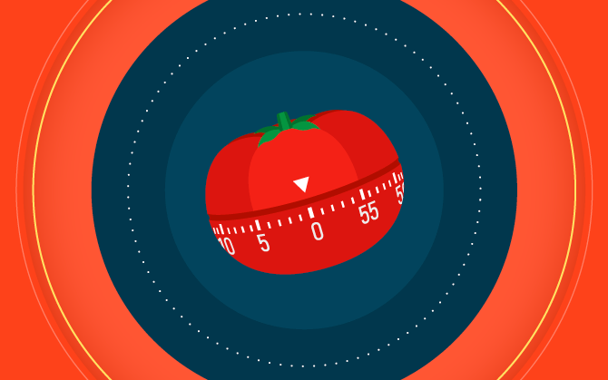
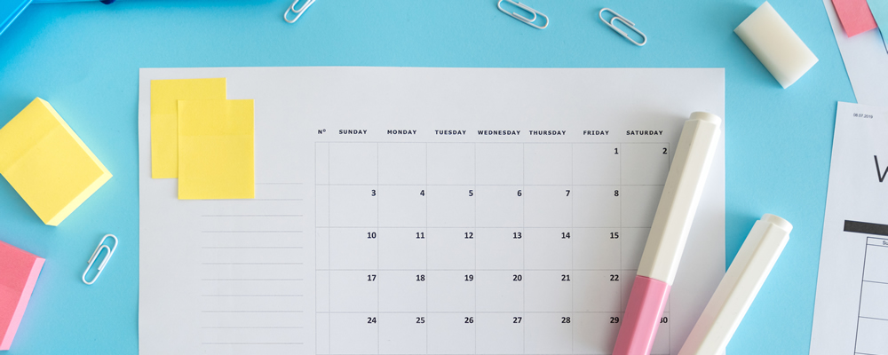

Consejos para estudiar
La técnica de estudio de Pomodoro
La técnica de estudio Pomodoro está pensada como un método de gestión del tiempo de estudio que se basa en la división del tiempo del estudio entre periodos de atención y descansos.
¿Cómo funciona el método Pomodoro? La técnica Pomodoro consiste en fraccionar el tiempo de estudio en bloques de 20 a 30 minutos de intensa actividad (cada bloque de estudio lo llamamos pomodoro), que deberán ir alternándose con pequeños descansos de 5 minutos. Cada cuatro bloques de estudio o pomodoros tomaremos un descanso mayor, de unos 20 a 30 minutos.
El calendario de estudio
Un calendario de estudio es un calendario en el que quedan reflejadas todas las horas que tienes disponibles para estudiar y la asignación de esas horas al estudio y a las tareas que vas a llevar a cabo en cada asignatura.
El calendario de estudio te va a permitir organizarte mejor y optimizar mejor el tiempo que tienes para estudiar. De verdad, la improvisación no es buena compañera. Además, si pones un calendario de estudio en tu vida te va a resultar más fácil crear una rutina de estudio e, incluso, adoptar el hábito de estudio en tu día a día.
Mapas mentales
Los mapas mentales son una estupenda técnica para sintetizar información. Los mapas mentales son una variante de los esquemas, en el que a partir de un concepto central nacen ramificaciones que asocian distintos conceptos.
Una gran ventaja que tienen los mapas mentales es que son muy visuales y esto facilita mucho el estudio. Con un solo vistazo a un mapa mental vamos a obtener una gran cantidad de información sobre un tema concreto, y además tendremos una imagen muy clara de cómo se relaciona toda esta información.
Los flashcards o tarjetas de estudio
Las flashcards son unas tarjetas de estudio en las que por una cara tenemos un concepto o una pregunta relacionada y por la otra cara tenemos una explicación desarrollada.
También se pueden utilizar imágenes u otros elementos visuales.
Tomar apuntes usando el método Cornell
Una de las técnicas más efectivas a la hora de tomar buenos apuntes es el método Cornell. Lo que distingue a este método de otras muchas técnicas para tomar notas es que está pensado, específicamente, para tomar apuntes realmente efectivos durante la clase.
Primero, para poner en práctica el método Cornell debes tener una escucha activa durante la clase. Este método va a requerir el 100% de tu atención.
En segundo lugar, a la vez que vas tomando apuntes, deberás clasificar la información en los diferentes apartados en los que está dividido el papel, en función de la naturaleza de la misma.
Ahora es el momento de que pongas en práctica estos consejos para mejorar en tus estudios.